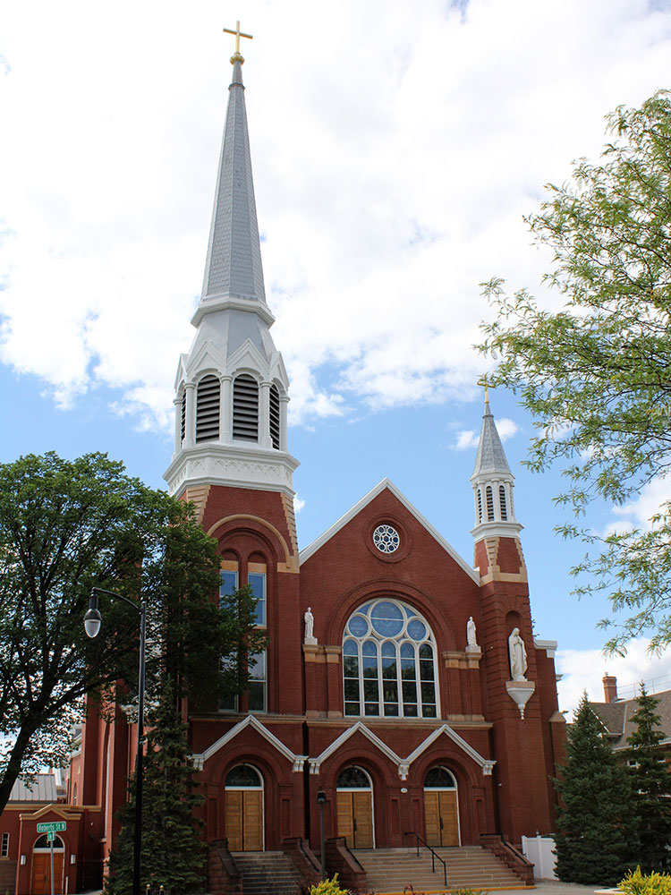
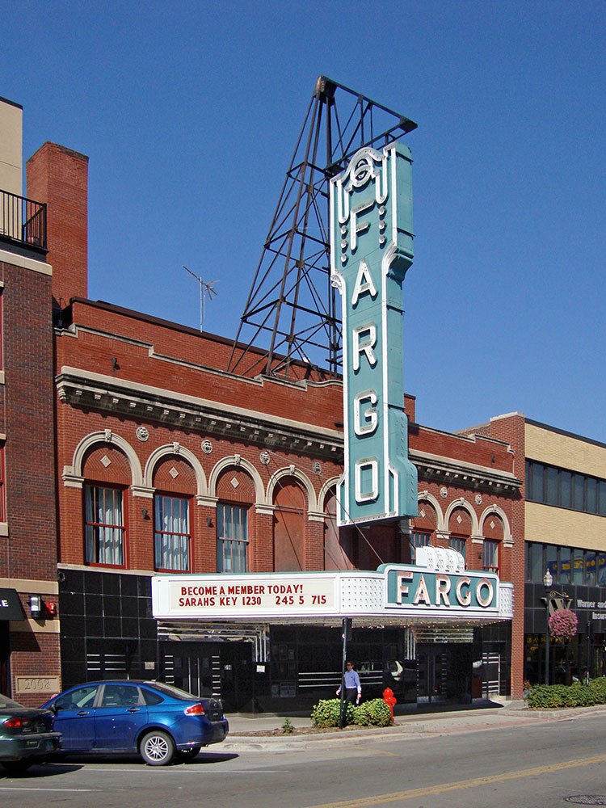
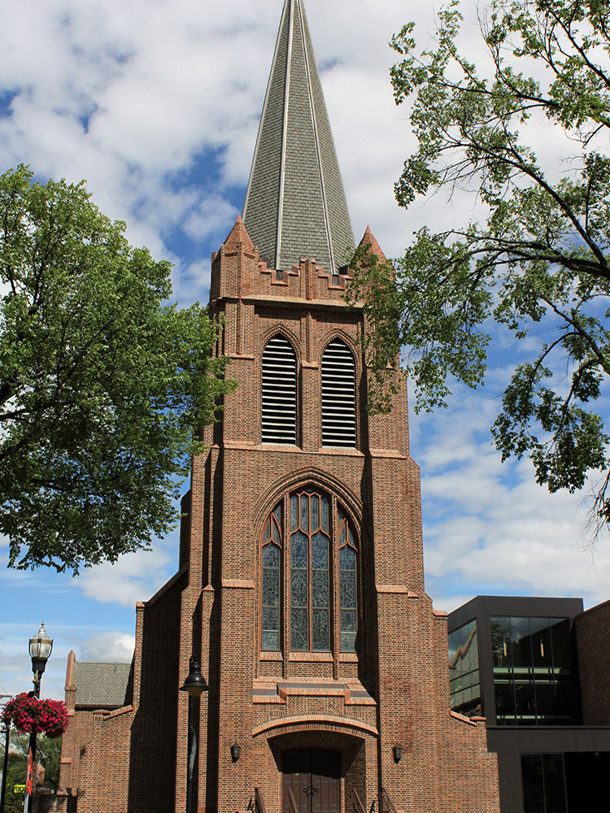

Regional center known for its vibrant downtown, cultural attractions, higher education institutions, growing business community, and year-round recreational opportunities.
General Information
How to Get There
From Radisson Blu Fargo (0.3 mi): Head north on Broadway N, turn right onto 4th Avenue N, continue to 4th Street N, and arrive at City Hall at 225 4th Street N.
Overview
Fargo is the largest city in North Dakota, on the Red River of the North on the border with Minnesota, and with its sister city Moorhead it forms the Fargo-Moorhead metropolitan area. It is known around the world for the 1996 Coen Brothers movie Fargo, though the film was set mostly in Minnesota, and for the wood chipper from the film, which is on display at the visitor center. The city is also known for North Dakota State University, its historic downtown, and its role as a center for agriculture, healthcare, and technology.
Visitors come to Fargo for the wood chipper and Fargo-related sights, for the Fargo Air Museum, Bonanzaville, and the Plains Art Museum. They also come for the downtown restaurants, craft breweries, and theaters, the Fargo Theatre, and Bison football at the Fargodome, and it is a welcoming and affordable city for a stop on Interstate 94.
History
Fargo was founded in 1871 as the Northern Pacific Railway built a crossing of the Red River and was named for William Fargo, a director of the railroad and a founder of Wells Fargo & Company. It grew quickly as a hub for the Red River Valley's "bonanza farms," large wheat farms that fed the world, and was a place where people could get a quick divorce in the early twentieth century. The city was devastated by a fire in 1893 and rebuilt with brick buildings, and the Red River flooded in 1997 and 2009, leading to flood-control projects. Today the city is one of the fastest-growing in the Midwest, with a growing downtown, North Dakota State University, and tech companies such as Microsoft's Fargo campus.
Sightseeing and Popular Landmarks
The wood chipper from the film is on display at the Fargo-Moorhead Visitors Center, a popular photo stop, and the Fargo Theatre, a restored 1926 Art Deco movie palace, is a downtown landmark. Statue of Liberty Park has a replica of the statue, and the Roger Maris Museum, in the West Acres Mall, honors the Fargo native who broke Babe Ruth's home run record in 1961. Bonanzaville is a living history village in West Fargo, and the Hjemkomst Center in Moorhead has a replica Viking ship.
Culture and Museums
The Plains Art Museum is the largest art museum in North Dakota, with a collection of American Indian and contemporary art, and the Fargo Air Museum has a collection of vintage aircraft. The Roger Maris Museum has baseball memorabilia, and the Children's Museum at Yunker Farm and the Fargo Theatre show family exhibits and films. The Fargo-Moorhead Opera, the Fargo-Moorhead Symphony Orchestra, and the Fargo Film Festival are other cultural attractions, and Broadway in downtown is a lively district of bars and restaurants.
Parks
Fargo has a good park system, with more than 100 parks. Island Park is a historic park near downtown, Lindenwood Park is along the Red River, and Gooseberry Park has a playground. The Red River Zoo has animals from cold climates, and the Red River Greenway has trails for walking and biking along the river. The Fargo Park District's many recreation areas provide outdoor options in all seasons.
Seasons and Weather
Fargo has a humid continental climate with some of the biggest seasonal swings in the country. Summers are warm and humid, with highs in the 80s°F, and winters are long and very cold, with highs in the teens and 20s°F, lows below zero, and about 50 inches of snow. Spring flooding on the Red River is a regular concern, and the best time to visit is from June to September.
This article uses material from Wikipedia as well as information from official tourism and institutional sources. Key references include Fargo-Moorhead Convention & Visitors Bureau, North Dakota Tourism, Plains Art Museum, Fargo Air Museum, and National Weather Service Grand Forks. Wikipedia material is from the article "Fargo, North Dakota", and is available under the Creative Commons Attribution-Share-Alike License 3.0.
Featured Locations

Bonanzaville USA
Expansive pioneer village and museum complex featuring over 30 historic buildings and exhibits on regional history, technology, and culture.
Fargo Air Museum
Dual-hangar aviation museum featuring historic aircraft, flight simulators, and educational exhibits spanning from early aviation to modern aerospace.
Plains Art Museum
Contemporary art museum featuring rotating exhibitions, educational programs, and a permanent collection with regional and Native American works.
Roger Maris Museum
Glass-enclosed tribute exhibit showcasing memorabilia and achievements of the legendary baseball slugger.
Statue of Liberty Park
Riverside green space featuring a small-scale replica of the Statue of Liberty and access to the scenic Red River Trail.
Wood Chipper from Fargo
Iconic movie prop display featuring the original wood chipper and memorabilia from the cult classic film.




